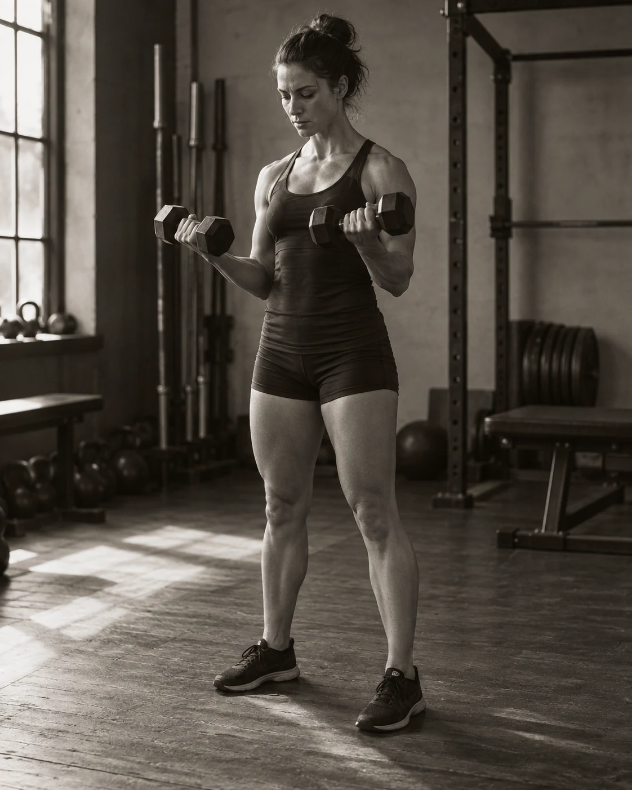
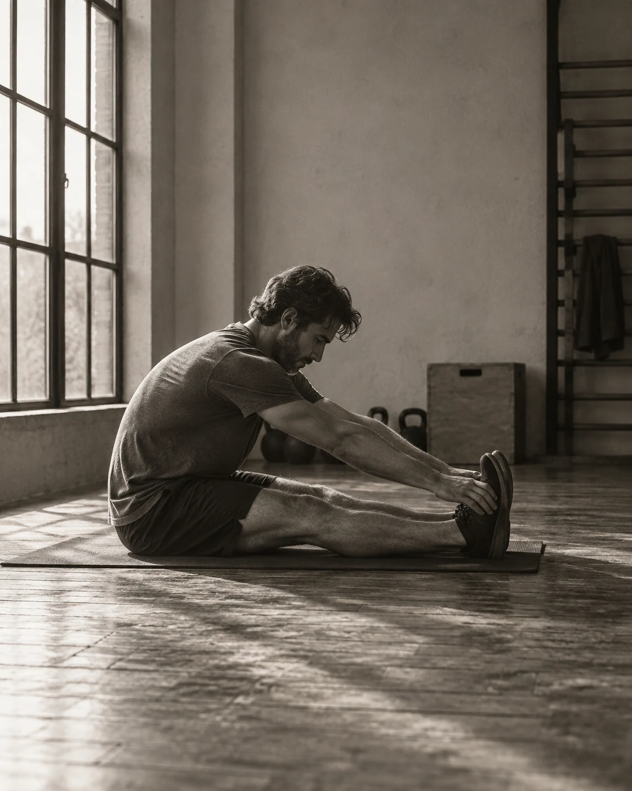
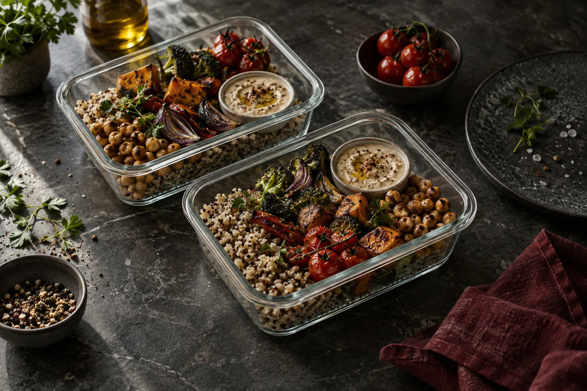
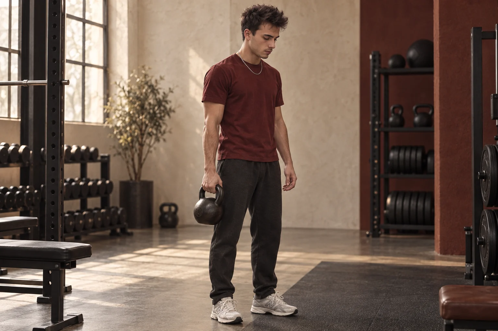

DA DOVE INIZIO?
Vuoi allenarti, ma tra esercizi, attrezzi e consigli non sai da dove cominciare. Nel coaching individuale individuiamo insieme i primi passi più adatti a te.
COACHING FITNESS INDIVIDUALE CON GIACOMO IORMETTI
Supporto personale. Passi chiari. Un allenamento adatto a te e alla tua quotidianità.
Scopri il coaching 1:1Forse non ti manca la motivazione.
Ma una direzione chiara.
Vuoi allenarti, ma tra esercizi, attrezzi e consigli non sai da dove cominciare. Nel coaching individuale individuiamo insieme i primi passi più adatti a te.
Ti alleni già e vuoi farlo con più consapevolezza. Guardiamo al tuo obiettivo, alla tecnica e agli aspetti su cui concentrarti nella prossima sessione.
Tra lavoro e impegni, l’allenamento passa in secondo piano. Cerchiamo un ritmo realistico e passi concreti compatibili con il tempo che hai.
Un buon piano parte da te.
E funziona nella tua vita quotidiana.
Cosa vuoi raggiungere? Cosa si concilia con la tua vita? Da queste risposte nasce un metodo che unisce allenamento, abitudini e supporto personale.
Passi che comprendi. Un allenamento in cui credi. E un ritmo che senti tuo.
Come nasce il tuo percorsoIl tuo obiettivo definisce la direzione. La tua quotidianità ci aiuta a renderla concreta.
Esercizi e carichi hanno uno scopo, adatto al tuo punto di partenza.
Piccoli passi e momenti di riflessione ti aiutano a trovare la tua strada.
Dal primo passo consapevole all’allenamento mirato: partiamo da dove sei oggi.

01 / ALLENAMENTOAllenamento con struttura. Consideriamo insieme i tuoi obiettivi, il punto di partenza e i prossimi passi utili.
È il mio obiettivo
02 / MOVIMENTOUn inizio adatto a te. Il movimento trova spazio nella tua quotidianità, insieme al recupero.
È il mio obiettivoUn’intenzione diventa un’abitudine. Scopriamo cosa ti aiuta e come adattare meglio il piano alla tua vita.
È il mio obiettivoPIANIFICA BENE. MANGIA CON SERENITÀ.
Un metodo che va oltre la palestra.
Tra allenamento, lavoro e impegni, mangiare deve restare pratico. Con Giacomo puoi ragionare su semplici abitudini alimentari, spesa e preparazione dei pasti.
Qui meal prep significa pianificare i piatti preferiti, preparare alcuni ingredienti e combinarli con flessibilità. Valutiamo prima insieme come inserirlo nel tuo coaching.
Scegli il focus alimentazione
PASSI PER INIZIARE CON IL MEAL PREP
Una struttura semplice. Nessun piano settimanale rigido.
Quali giorni saranno pieni? Quali piatti ti piacciono? Pianifica pasti adatti ai tuoi impegni e riunisci la spesa in una lista chiara.
Prepara alcuni componenti, come un cereale, delle verdure e una salsa. Così, per il prossimo pasto non dovrai ricominciare da zero.
Una base, idee diverse: una bowl, un wrap o un contorno. Adatta ogni combinazione ai tuoi gusti e alla tua giornata.
I TUOI INGREDIENTI / UN ESEMPIO
Quinoa + verdure al forno + ceci + una salsa a tua scelta.
Oggi una bowl. La prossima volta un ripieno per il tuo wrap.SPAZIO PER IL TUO PROSSIMO PASSO.
Una decisione per te.
Un passo che comincia oggi.
COSA PUOI ASPETTARTI DAL TUO COACHING
Un’attenzione che dà una direzione al tuo allenamento.

IORMETTI CONCEPTS
NON TUTTI I GIORNI
SONO UGUALI.
IL TUO PERCHÉ RESTA.
Un piano può adattarsi.
Dopotutto, deve essere adatto a te.
Chiarezza all’inizio.
Struttura lungo il percorso.

Parliamo del tuo obiettivo, del punto di partenza e di ciò che conta per te. Anche la tua quotidianità fa parte del quadro.
Definiamo una direzione adatta, con passi chiari, un ritmo realistico e una visione condivisa.
Ti alleni e provi nuove abitudini. Il piano ti orienta e lascia spazio per imparare.
Riflettiamo insieme: cosa funziona? Cosa è cambiato? Il tuo percorso cresce con te.
IL TUO ALLENAMENTO PUÒ ADATTARSI A TE.
Muoviti con consapevolezza. Trova il tuo ritmo. Dedica al prossimo passo l’attenzione che merita.
Conosci Giacomo
AL TUO RITMO.
CON UNA DIREZIONE CHIARA.
GIACOMO
CONSTANTIN
Il tuo obiettivo merita
attenzione personale.
Iormetti Concepts unisce fitness e coaching sotto un unico nome: Giacomo Constantin Iormetti.
Al centro c’è un allenamento che abbia senso per te: uno sguardo aperto al tuo punto di partenza e un piano che tenga conto della tua vita.
Pianifica il primo passoIL TUO PROSSIMO PASSO CONTA.
MENO CASUALITÀ.
PIÙ DIREZIONE.
Coaching fitness in dialogo diretto con Giacomo.
Porta il tuo obiettivo e il tuo punto di partenza. Insieme orientiamo la sessione su ciò che ti serve ora: iniziare con consapevolezza, fare chiarezza o trovare un nuovo stimolo.
Una persona.
Un obiettivo personale.
IORMETTI CONCEPTS / COACHING INDIVIDUALE
100 €all’ora · 60 minuti
Concordiamo orario, luogo e contenuti prima della prenotazione. Da questa pagina non viene prenotata alcuna sessione.
COME POTREBBE SVOLGERSI LA SESSIONE
Lo svolgimento dipende dal tuo obiettivo e dal tuo punto di partenza.
Cosa conta oggi? Chiariamo su cosa vuoi lavorare e come ti senti.
Ti alleni con supporto personale. Domande e suggerimenti trovano spazio durante la sessione.
Riflettiamo sulla sessione e individuiamo il prossimo passo da portare nel tuo allenamento.
Esempi di impaginazione fittizi — non sono recensioni reali.Testi, persone e stelle servono solo all’anteprima grafica. Non rappresentano esperienze reali di coaching.
ESEMPIO FITTIZIO · NON È UNA RECENSIONE
«Spiegazioni tranquille e feedback diretto mi aiuterebbero ad affrontare gli esercizi con più consapevolezza.»
ESEMPIO FITTIZIO · NON È UNA RECENSIONE
«Per me sarebbe importante un ritmo di allenamento compatibile con il lavoro e la vita quotidiana.»
ESEMPIO FITTIZIO · NON È UNA RECENSIONE
«Idee semplici per la spesa e la preparazione mi aiuterebbero a iniziare nuove abitudini alimentari.»
Sì. Puoi scegliere abitudini alimentari, organizzazione della spesa e preparazione dei pasti come focus del confronto. Concordiamo prima i contenuti specifici.
Il coaching fitness individuale costa 100 € all’ora (60 minuti). Orario, luogo e contenuti vengono concordati prima della prenotazione.
Il coaching individuale ti offre spazio per fare domande e ricevere feedback personale. Può aiutarti ad allenarti con più consapevolezza e a chiarire i prossimi passi.
La tua esperienza finora è il punto di partenza del confronto. Racconta dove sei e cosa desideri: ci aiuta a capire quale supporto fa per te.
Parti dal tuo obiettivo: più forza, più movimento o abitudini più costanti. Nel confronto personale lo trasformiamo in passi concreti.
Dipende dal tuo obiettivo e dalla tua quotidianità. Il tempo a disposizione fa parte del piano fin dall’inizio.
Cosa vorresti cambiare? Come ti alleni ora? Quale ritmo sarebbe realistico? Tre risposte sincere sono un buon punto di partenza.
Il tuo obiettivo è il punto di partenza.
Coaching fitness individuale · 100 € / ora. Scegli il tuo obiettivo e un possibile ritmo per prepararti al primo confronto.